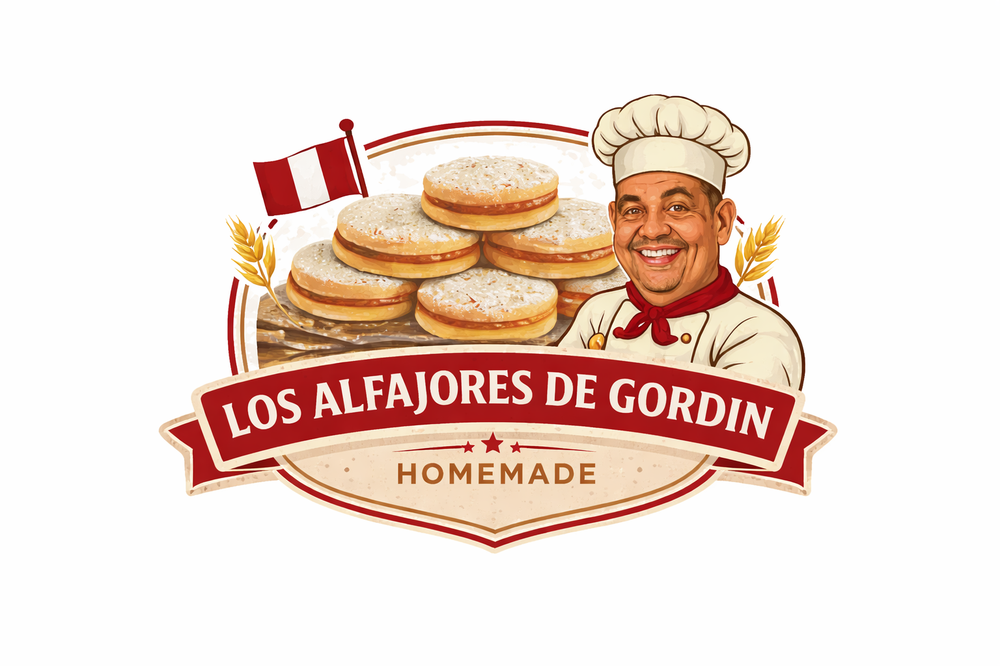

Authentic Peruvian alfajores made by Justo Rosell
Order via DM or WhatsApp: 786-582-8495
Made with love and family tradition in small batches, Los Alfajores De Gordin brings the authentic taste of Peru to your home. Perfect for gifting or indulging!